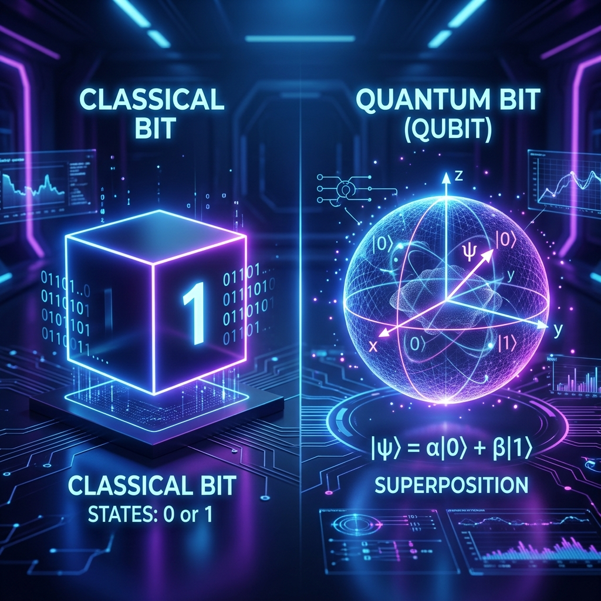

For decades, the world has been built on a binary foundation. Every email you send, every video you stream, and every line of code I write ultimately boils down to a sequence of 0s and 1s. This is the realm of the Classical Bit.
But as we push the boundaries of physics and silicon, a new contender has emerged: the Qubit. While it might sound like something out of science fiction, quantum computing is rapidly shifting from theoretical equations to a reality that could redefine how we solve the world's most complex problems.
The Classical Bit: Certainty in 0 and 1
Think of a classical bit like a light switch. It can either be on (1) or off (0). There is no middle ground. If you have two bits, they can represent one of four states at any given time: 00, 01, 10, or 11.
This deterministic nature is incredibly reliable, but it has a limit. As problems grow exponentially complex—like simulating the behavior of a single molecule—classical computers struggle to keep up because they have to process every possibility one by one.
The Qubit: Embracing Superposition
A Quantum Bit (or Qubit) operates on the principles of quantum mechanics. Unlike its classical counterpart, a qubit doesn't have to be just a 0 or a 1. Thanks to a phenomenon called superposition, it can exist in a state that is a complex combination of both simultaneously.
This means that while 2 classical bits can represent one of 4 states, 2 qubits can represent all 4 states at the same time. This parallelism allows quantum computers to explore a vast search space in a fraction of the time a classical computer would take.
Entanglement: The 'Spooky' Connection
Beyond superposition, qubits can also be entangled. When two qubits are entangled, the state of one is directly linked to the state of the other, no matter how far apart they are. Einstein famously called this "spooky action at a distance."
Entanglement allows quantum computers to process information in a highly coordinated way, enabling them to solve problems that involve massive amounts of interdependent data, such as supply chain optimization or complex financial modeling.
Fundamental Differences
| Feature | Classical Bit | Qubit (Quantum Bit) |
|---|---|---|
| State | 0 or 1 | Superposition of 0 and 1 |
| Logic | Boolean Algebra | Quantum Logic / Unitary Transforms |
| Connectivity | Independent unless wired | Can be Entangled |
| Complexity Handling | Linear growth | Exponential growth |
Final Thoughts
We aren't going to replace our laptops with quantum computers anytime soon. Classical bits are perfect for the everyday tasks we do. However, for the "impossible" problems—drug discovery, climate modeling, and breaking modern encryption—the qubit is our best hope.
We are currently in the "NISQ" (Noisy Intermediate-Scale Quantum) era, where we are building the first generation of useful quantum systems. It's an exciting time to be at the intersection of physics and computer science.